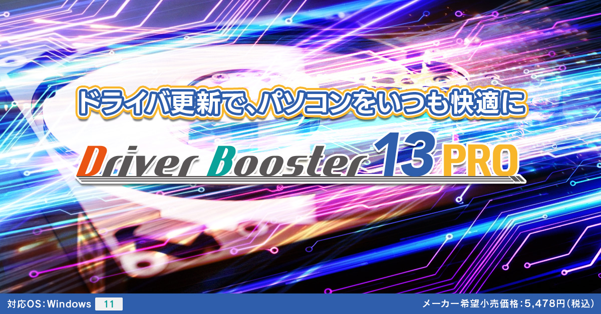

『Driver Booster 13 PRO』とは？TEST
皆さんはパソコンを使っていてこんな経験ありませんか？
- パソコンの画面が急に真っ青になった
- PC の画面サイズが急におかしくなった
- 突然スピーカーから音がでなくなった
こうした問題を解決するには、まずドライバを最新のものに更新する必要があります。
ただ、いちいちパソコン内部を調べて各種機器メーカーのホームページにアクセスし、 最新のドライバがあるかを確認するのはとても面倒です。
そんな時に便利なのが『Driver Booster 13 PRO』。 これがあれば、いちいち各種機器メーカーのホームページを調べる必要はありません。 本ソフトは実に1,800万種類以上の「デバイスドライバデータベース」を持っているので、
世界中のあらゆる機器のドライバを最新のものに更新することができます。
また、ドライバのダウンロードはすべてメーカー公式サイト経由で行われますので、 必ず最新のドライバをダウンロードすることができます。 さらに、「Microsoft WHQL 試験」とIObit の検査にも合格しているドライバなので安心してご使用いただけます。使い方はとても簡単。「スキャン」ボタンをクリックし、スキャン完了後に「すべて更新」を押すだけ。
たったのこれだけで古いドライバを検出し、最新の状態にしてくれます。
また、ドライバの自動更新を有効にしておけば、PC の待機時間に自動でドライバ更新を行い、 常に最新のドライバで快適な PC環境を保つことができます。
Driver Booster 13 PRO をより
安全にお使いいただくために
[重要]
ドライバの更新は、システムに変更を加えるものであるため、その性質上システムに不具合を
引き起こす危険性をともないます。
「Driver Booster 13 PRO」 を使用することで、万が一の場合に備えて
より安全にお使いいただくことが可能になります。
次のサポート情報にてご案内する手順をあらかじめご確認いただき、
適切な導入運用をおこなっていただくことを強くおすすめいたします
【バージョンアップ内容】
- 新たに 10万種類以上の 「ARM64 デバイス」に対応したドライバ更新に対応しました。
- オンラインデータベースを拡張し、1,800万種類以上のデバイスドライバーの更新に対応しました。
- 最新ドライバにより、システム安定性・AIパフォーマンスが向上しました。
- スキャンエンジンの最適化により、スキャン速度が 20％ 高速化しました。
- ドライバのインストールエンジンの最適化により、インストール速度が 8％ 高速化し、インストールの成功率が 57％ 向上しました。
- ゲームブーストの改良により、パフォーマンスが最大 5％ 向上しました。
- 操作画面のデザインが新しくなりました。
主な機能
安全・高速にドライバを更新
本ソフトをインストールしておけば、パソコンを使用していないときに「最新のドライバ」の
ダウンロードからインストールまでを自動で処理してくれます。
面倒なドライバ更新作業を手間なく高速で実行してくれるので大変便利。
また、暗号化された通信でドライバデータベースサーバーに接続するので、
常に安全にドライバ更新が行えるだけでなく、すべてのドライバがマイクロソフト社の品質試験を
パスしておりますので、ドライバ更新でトラブルになることはありません。
ドライバ更新に失敗した…。でも1クリックで元通り
もしドライバ更新に失敗し、なんらかの問題が生じたときでもご安心ください。
本ソフトは、1クリックで直前のバージョンに戻すことができます。
また、「ツール」メニューではドライバのアップデートで発生しがちな「よくあるトラブル」を
数クリックで修復することもできます。
例えば、ドライバ更新により音が出なくなった場合、「ツール ＞ 音が出ない問題を修正」の順に
クリックすれば、問題箇所のスキャンから修復までを自動で行います。
使い方はとても簡単
本ソフトの操作はとても簡単。ソフトを起動したら「スキャン」ボタンをクリック。
スキャン完了後に「すべて更新」を押すだけ。どなたでも直感的に操作できるようになっております。
それでもドライバ更新が不安な方は・・・
「ドライバを更新すると何らかのトラブルになるのではないか・・・」と不安を感じている方のために、
本ソフトには安心してドライバを更新していただくための機能が搭載されております。
-
トラブルの実績がない「安定したドライバ」のみを優先して適用することにより、
事前にトラブルを防ぐことができます。「設定 ＞ 安定性を優先」にチェックを入れておけば安心です。
❶スキャンの「安定性」を優先する
-
「WHQLプログラムで認定されたドライバのみ表示」にチェックを入れておけば、
マイクロソフト社の試験に合格したドライバのみを適用するので、トラブルになることはありません。
❷マイクロソフト社の試験に合格したドライバのみを更新する
ゲームブースト機能
この機能を「オン」にすると、「パソコンゲーム」をする際に不要なアプリやサービスを停止し、
よりゲームの動きを滑らかにするなどゲーム環境を向上してくれます。パソコンでよくゲームをされる方にお勧めの機能です。
サイレントモード
「自動サイレントモード」にチェックを入れておくと、指定されたプログラムやゲームが実行されている間は
ドライバ更新に関する通知が非表示となり、プログラムやゲームの実行を妨げることはありません。
スケジュール設定でドライバ更新を自動化
あらかじめ「毎週 / 隔週 / 毎月」などの「スケジュール設定」をしておけば、
自発的にドライバ更新作業をしなくてもスケジュール通りに自動でドライバ更新を実行してくれます。
「オフライン」でのドライバアップデートに対応
ネットワークドライバが不足したことによる「ネットワーク障害」があった場合、
インターネット接続ができないためドライバ更新もできません。
そんな時に「オフラインドライバーアップデーター」を使うと、
オフラインの状態で必要なドライバ更新ができるようになりました。
画面写真付きの「解説ページ」も用意しているので、ネットワーク関連のトラブルで困った際は。
この機能を活用してください。
操作画面の色を変更できる
操作画面の見た目に飽きたら、他の色に変更してみましょう。
全6パターンの中から、もしくはカラーパレットの中からお好きな色をお選びください。
気に入った色がない場合は、「カラーパレット」の中からお好きな色を選ぶこともできます。
1本で3台までインストール可能
本ソフト1本で、PC3台までインストール可能です。
例えば職場のマシンに1ライセンス、ご自宅のマシンと家族所有のPCそれぞれに1ライセンスずつ、といったかたちでご自由にお使いいただけます。
動作環境
- DriverBooster13PRO
-
対応OS：Windows11
CPU：上記OSが正常に動作するCPUクロック数
メモリ：OSが正常に動作するメモリ容量
HDD：40MBの空き容量
その他：インターネットへの接続環境
注意事項
※ご購入の後のキャンセルは受け付けておりません。注意事項を必ずご確認の上ご購入ください。
※本商品の仕様は、都合により予告なく変更することがあります。あらかじめご了承ください。
※上記OS以外のパソコンでは動作保証の対象外となります。
※改造または自作機のパソコンについては動作保証の対象外となります。
※Microsoft、およびWindowsは米国Microsoft Corporationの米国およびその他の国における登録商標です。
※本商品をご利用いただく前には必ず取扱説明書、使用許諾契約書をよくお読みいただき、それらに同意の上でご使用ください。
本ソフトをインストールした時点ですべての条項および記載内容にご同意いただいたものとします。
※内容物や購入を証明できるものは、必ず保管してください。